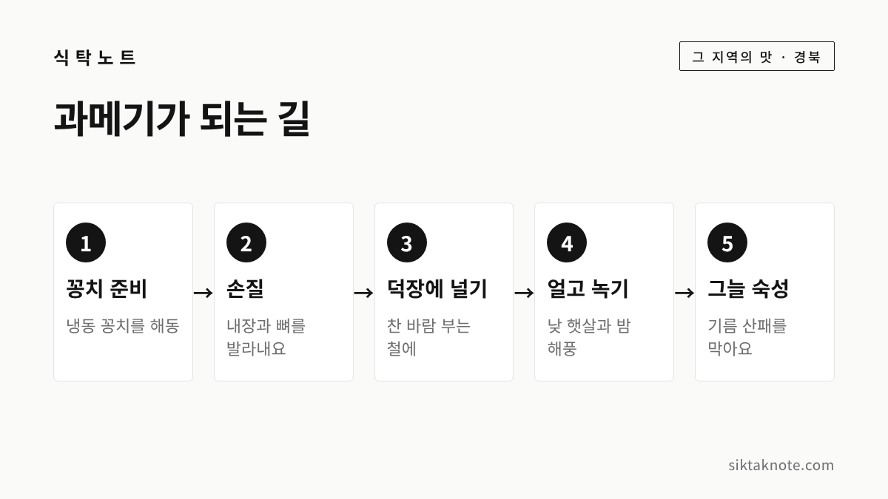
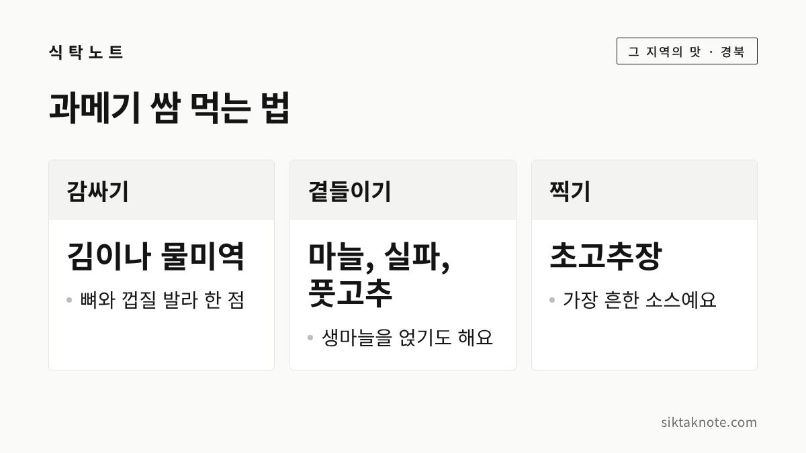

구룡포 과메기 이야기, 알아두면 좋은 4가지

3줄 요약
- 과메기는 눈을 꿰어 말린다는 '관목(貫目)'에서 이름이 왔다고 전해져요.
- 원래는 청어로 만들었지만, 청어가 줄면서 지금은 꽁치가 주로 쓰입니다.
- 올해 제27회 구룡포 과메기 축제는 11월 7~8일에 열렸고, 제철은 11월부터 이듬해 2월까지라고 합니다.
행사 정보
- 기준일
- 2026년 11월 12일
- 올해 축제
- 제27회 포항 구룡포 과메기 축제, 11월 7~8일, 구룡포 아라광장 일원 (이미 끝났음)
- 제철
- 11월부터 이듬해 2월까지 (경북매일 보도)
- 확인 방법
- 한국민족문화대백과사전과 포항시 발표를 전한 기사 (포항시 누리집은 직접 열어 보지 못함)
- 지리적표시 등록
- 공식 자료로 확인하지 못해 글에 적지 않았음
2026.11.12 확인 기준. 내년 축제 일정은 아직 나오지 않았어요. 가기 전에 포항시 공지를 확인해 주세요.
겨울이 오면 구룡포 덕장에 걸리는 것
찬바람이 불기 시작하면 경북 포항 구룡포 바닷가에는 생선을 줄줄이 걸어 놓은 덕장이 들어섭니다. 과메기를 말리는 풍경인데요. 겨울에 한 번쯤은 식탁에 오르는 별미지만, 이름이 왜 과메기인지, 원래는 어떤 생선이었는지는 의외로 잘 모르시는 분이 많아요. 오늘은 구룡포 과메기에서 알아두면 좋은 네 가지를 이야기해 보겠습니다. 이름, 재료, 말리는 방식, 먹는 법 순서예요.

1. 이름은 '관목'에서 왔다고 해요
한국민족문화대백과사전은 과메기라는 이름이 '관목(貫目)'에서 왔다고 설명합니다. 청어의 눈을 꼬챙이로 꿰어 말렸다는 뜻이에요. 구룡포 방언에서는 '목'을 '메기'로 발음해서 '관메기'가 되었고, 이후 'ㄴ'이 빠지면서 '과메기'가 되었다고 합니다.
유래 이야기도 몇 가지 전해집니다. 대백과에는 재담집 《소천소지(笑天笑地)》에 실린 이야기가 나와요. 한양으로 과거를 보러 가던 동해안 선비가 바닷가 나뭇가지에 걸려 있는 청어를 먹어 보고 맛에 반했고, 그 뒤로 겨울마다 청어를 말려 먹었다는 내용입니다. 뱃사람들이 배 지붕에 청어를 올려 두었더니 바닷바람에 얼고 녹기를 되풀이하다가 저절로 과메기가 됐다는 이야기도 함께 소개돼요.
다만 정확한 기원은 알려져 있지 않습니다. 같은 이야기를 실은 책 이름과 연도를 다르게 적은 보도도 있어서, 어디까지가 사실인지는 단정하기 어려워요. 옛이야기로 즐기시면 좋겠습니다.

2. 청어에서 꽁치로 바뀐 사연
과메기는 처음에는 청어로 만들었습니다. 그러다 청어가 잘 잡히지 않게 되면서 꽁치가 그 자리를 이어받았어요. 시기는 자료마다 조금씩 달라서, 대백과는 1960년대 이후라고 하고 2006년 정책뉴스는 1960년대 후반부터라고 적습니다. 2025년 경북매일은 1960~70년대 청어 어획량이 줄면서라고 전해요. 대략 1960년대부터 1970년대 사이에 바뀌었다고 보시면 됩니다.
지금 시중에서 만나는 구룡포 과메기는 대부분 꽁치로 만든 것입니다. 청어와 꽁치는 지방 함량이 달라서 마르는 시간에도 차이가 있다고 해요.
3. 겨울 해풍에 얼리고 말리는 방식

구룡포 과메기는 바닷바람에 얼렸다 녹였다를 되풀이하며 말립니다. 경북매일은 낮에는 햇살, 밤에는 동해 해풍으로 말리는 자연 건조 식품이라고 소개해요. 구룡포가 과메기로 이름난 이유에 대해서는 구룡포과메기조합 이사장의 설명을 전한 보도가 있습니다. 백두대간을 넘어온 북서풍이 영일만을 지나며 습기를 머금었다가, 산을 다시 넘으면서 습기가 빠져 말리기에 알맞다는 이야기예요.
말리는 모양에 따라 부르는 이름도 나뉩니다. 매일신문 보도에 따르면 전통적인 통과메기는 배를 가르지 않고 내장이 든 채로 말린 것이고, 요즘 대세인 편과메기는 내장을 빼고 살을 포로 뜬 것입니다. 편과메기는 1970년대 후반부터 나왔다고 해요. 같은 보도에서 구룡포 덕장은 보통 하루 정도는 햇볕에 말리고 이틀 정도는 그늘에서 숙성한다고 했는데, 햇볕을 너무 많이 받으면 기름이 산패해 냄새가 나기 때문이라고 합니다. 이 일수는 한 보도에 나온 내용이라 덕장과 날씨에 따라 다를 수 있어요.
구룡포는 전국 과메기 생산량의 많은 부분을 차지합니다. 2006년 정책뉴스는 80%, 2018년 매일신문은 약 90%라고 전합니다.
4. 김·미역·마늘, 쌈으로 먹는 법

먹는 방법은 쌈이 기본입니다. 대백과에는 뼈와 껍질을 발라낸 뒤 생미역, 마늘, 실파, 풋고추를 곁들여 초고추장에 찍어 먹는다고 나와요. 김과 함께 먹기도 한다고 합니다. 2025년 경북매일은 물미역과 돌김, 생마늘, 초고추장 조합을 소개했고, 2006년 정책뉴스에는 미역, 다시마, 배추, 파, 김과 함께 먹는 경우가 많다고 적혀 있어요.
자연 숙성에서 나오는 생선 향은 취향이 갈린다고 합니다. 처음이라면 쌈 채소를 넉넉히 준비해서 한 점씩 싸 드셔 보시는 게 좋겠습니다. 최근에는 냄새를 줄인 초보자용 제품이나 밀키트도 나온다고 하니 포장 안내를 확인해 보세요. 쌈에 쓸 김이 눅눅하다면 김 보관법 3가지를 참고하셔도 좋겠습니다.
집에서 보관하고 해동할 때
과메기는 말린 생선이지만 수분이 남아 있는 반건조 상태라서 보관에 신경이 쓰이는 편입니다. 먼저 포장에 적힌 보관 방법과 날짜를 따르시는 게 좋겠습니다. 아래 내용은 언론 보도에서 정리한 일반 요령이에요.
- 냉장: 남은 것은 바로 밀폐용기에 담아 냉장하고, 먹을 만큼만 꺼내 두세요. 한 보도는 식품의약품안전처 안내를 들어 냉장은 5도 이하로 두라고 전합니다.
- 냉동: 한 번 먹을 만큼씩 나눠 공기가 닿지 않게 싸서 얼립니다.
- 해동: 실온이 아니라 냉장실에서 천천히 녹이고, 한 번 녹인 것은 다시 얼리지 않는 게 좋습니다.
- 상한 경우: 시큼한 냄새가 나거나 끈적이고 색이 변했다면 먹지 않는 게 좋겠습니다.
식탁에 오래 두는 것도 조심하셔야 해요. 보도에서는 조리된 음식을 실온에 2시간 넘게 두지 말라는 식약처 안내를 인용합니다. 생선을 만진 가위와 도마, 손은 세제로 씻어야 하는데요. 냄새가 남을 때는 생선 비린내 손질하고 보관하는 법도 도움이 되실 거예요.
올해 구룡포 과메기 축제와 제철
포항시 발표를 전한 경북매일에 따르면 제27회 포항 구룡포 과메기 축제가 11월 7일과 8일, 구룡포 아라광장 일원에서 열렸습니다. 과메기 할인 판매장과 유래·요리법을 알리는 홍보관, 과메기 쌈 싸 먹기 체험 같은 프로그램이 있었다고 해요. 올해 일정은 이미 끝났고 내년 일정은 아직 나오지 않았습니다.
제철은 11월부터 이듬해 2월까지라고 전해집니다. 올해는 꽁치 어획량이 줄어 출하 가격이 지난해보다 20% 가까이 올랐고, 상황에 따라 생산이 일찍 멈출 수 있다는 보도도 있어요. 사 드실 계획이라면 주문이 몰리는 시기에는 배송이 늦어질 수 있다는 점도 알아 두시면 좋겠습니다. 바다 음식 이야기가 더 궁금하시면 통영 굴 이야기와 안동 간고등어 이야기도 이어서 읽어 보세요.
아직 확인하지 못한 것
구룡포 과메기가 지리적표시로 등록되어 있는지는 공식 자료로 확인하지 못했어요. 2009년 매일신문에는 포항시가 지리적 표시 단체표장을 출원했다는 보도가 있는데요. 출원 이후 결과를 공식 자료로 확인하지 못해서 등록되었다고는 쓰지 않았습니다. 또 건조 기간은 시기와 덕장에 따라 다르게 전해집니다. 2006년 정책뉴스에는 예전에는 보름쯤, 당시에는 3일쯤 말렸다고 나와 있으니 수치는 참고만 해 주세요.
마지막으로 기억하실 네 가지
과메기는 눈을 꿰어 말렸다는 '관목'에서 이름이 왔다고 전해지고, 원래는 청어였지만 지금은 꽁치가 주로 쓰입니다. 구룡포 해풍에 얼고 녹으며 마르고, 김이나 미역에 싸서 초고추장에 찍어 먹는 게 기본이에요. 이름, 재료, 말리는 방식, 먹는 법. 이 네 가지만 기억하셔도 올겨울 과메기가 조금 더 재미있게 느껴지실 것 같습니다.
이야기는 한국민족문화대백과사전과 정책뉴스, 매일신문·경북매일 등 언론 보도에서 확인되는 내용을 바탕으로 했어요.